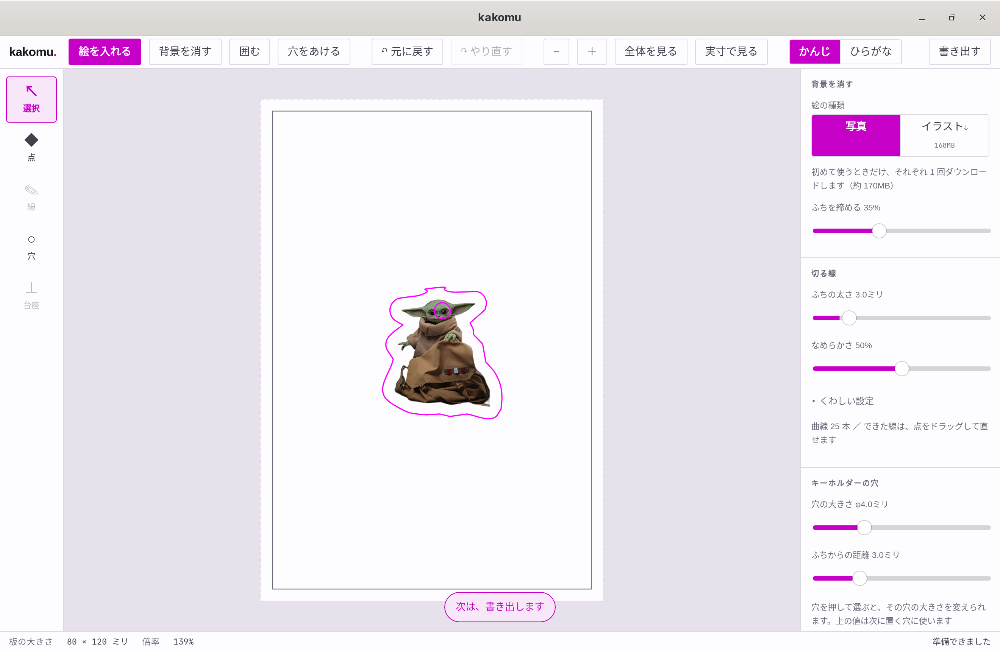
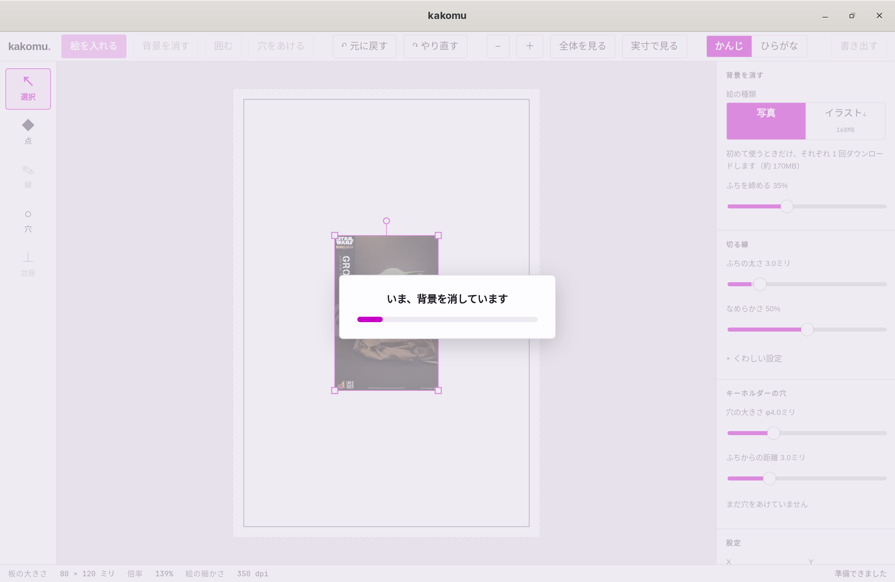
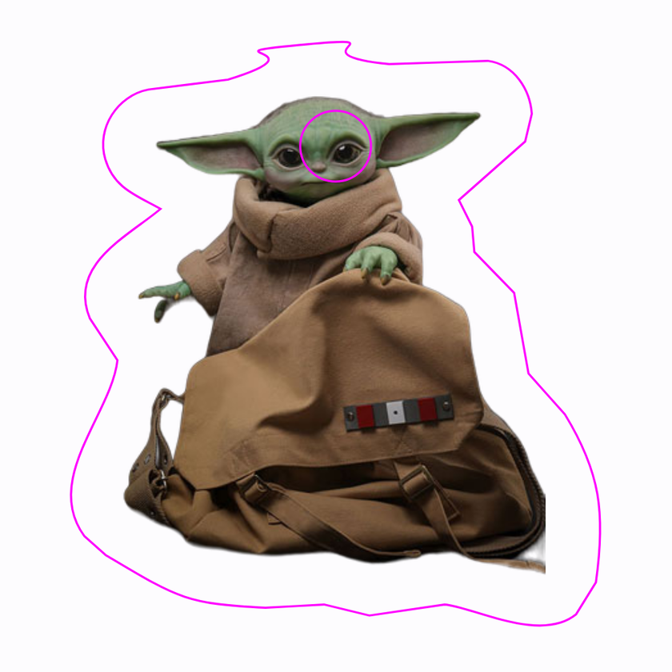

アクリルキーホルダーの加工データを作るデスクトップアプリ。
絵を読み込み、背景を消し、その外側に切る線を作り、キーホルダーの穴をあけて、レーザー加工機用の SVG と UV プリンター用の PDF を書き出します。Windows / macOS / Linux で動きます。
画面
左に道具、中央に板、右に設定・レイヤー・チェック、下に板の大きさ・倍率・絵の解像度が並びます。長さと位置は mm、角度は度で表示します。

使いかた
画面の下に、次にやることが表示されます。


機能
数値はすべて v0.2.1 の範囲と既定値です。
| 設定 | 値 |
|---|---|
| 絵の種類 | 写真 isnet-general-use（既定）／ イラスト isnet-anime |
| ふちを締める | 0–100%（35%） |
| 設定 | 範囲（既定） |
|---|---|
| ふちの太さ | 0–20mm（3.0mm） |
| なめらかさ | 0–100%（50%） |
| 細すぎるところを直す ※ | オン／オフ（オン） |
| 内側の穴を残す ※ | オン／オフ（オフ） |
| 半透明をどこから残すか ※ | 1–254（128） |
| 小さな点を無視する ※ | 0–50mm²（4.0mm²） |
※ は「くわしい設定」の中にあります。
| 設定 | 範囲（既定） |
|---|---|
| 穴の大きさ | φ2–10mm（φ4.0mm） |
| ふちからの距離 | 1–10mm（3.0mm） |
| かんじ | ひらがな |
|---|---|
| 背景を消す | うしろを けす |
| 穴をあける | あなを あける |
| 書き出す | ほぞん する |
右下の「チェック」と下のバーに出ます。エラーがあっても書き出しは止めません。切る線を作ったときの検査は「切る線」パネルに出ます。
| 内容 | 基準 | 種類 |
|---|---|---|
| 絵の実効解像度 | 300dpi 未満 | 注意 |
| 穴の大きさ | φ2mm 未満 | エラー |
| 穴が切る線からはみ出している | — | エラー |
| 穴のふちから切る線のふちまで | ふちからの距離 未満 | エラー |
| 穴どうしの間隔／重なり | ふちからの距離 未満 | エラー |
| 切る線の幅（「切る線」パネル） | 1.5mm 未満 | 太らせたら 注意、残れば エラー |
| 切る線の内側の穴（「切る線」パネル） | φ2mm 未満 | エラー |
| 操作 | 動き |
|---|---|
| ホイール | 表示を上下左右に動かす |
| Ctrl / ⌘ + ホイール | 拡大・縮小 |
| 中ボタンでドラッグ、Space + ドラッグ | 表示を動かす |
| Ctrl / ⌘ + Z ／ Ctrl / ⌘ + Shift + Z | 元に戻す ／ やり直す（ドラッグ 1 回で 1 回分） |
| Delete / Backspace | 選んだものを消す（「点」の道具では選んだ点） |
書き出し
ファイル名は最初に読み込んだ画像の名前から付けます。書き出したあと、どちらをどの機械に渡すかを画面に表示します。
<名前>_切る.svg#FF00FF、線幅 0.1mm、fill="none"<名前>_印刷.pdf現状
入れかた
github.com/tukumanalab/kakomu/releases。コード署名をしていないので、どの OS でも初回起動時に警告が出ます。
.msi ／ -setup.exe
実行して入れます。「WindowsによってPCが保護されました」と出たら、「詳細情報」→「実行」を選びます。
_universal.dmg（Intel / Apple Silicon）
開いてアプリケーションに入れます。初回は「開発元を確認できないため開けません」と出るので、アプリを右クリックして「開く」を選びます。2 回目からはそのまま開けます。
.AppImage ／ .deb ／ .rpm
AppImage は実行の許可を付けて起動します。
chmod +x kakomu_*.AppImage
./kakomu_*.AppImage
AUR には未登録なので、yay -S では入りません。リポジトリの PKGBUILD から入れると、依存パッケージも一緒に入ります。
git clone https://github.com/tukumanalab/kakomu.git
cd kakomu/packaging/aur/kakomu-bin
makepkg -si
ソースからビルドする場合は packaging/aur/kakomu で同じように makepkg -si します。
AppImage を手で入れる場合は、webkit2gtk-4.1 gtk3 librsvg fuse2 と、ファイルを選ぶダイアログ用の xdg-desktop-portal xdg-desktop-portal-gtk が要ります。-gtk が無いと「絵を入れる」を押しても何も出ません。Hyprland では xdg-desktop-portal-hyprland も入れます。
画面が真っ白になる、描画が崩れるときは、WebKitGTK の DMABUF レンダラを切ります。WEBKIT_DISABLE_DMABUF_RENDERER=1 ./kakomu_*.AppImage